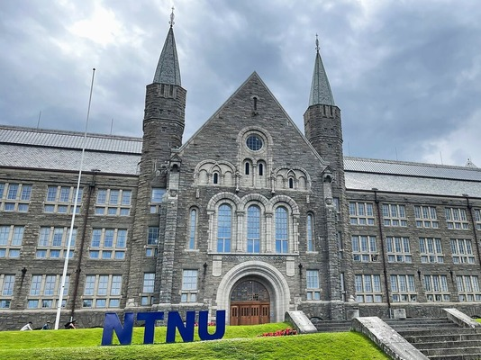
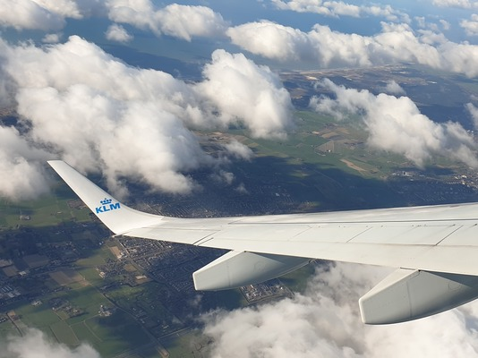
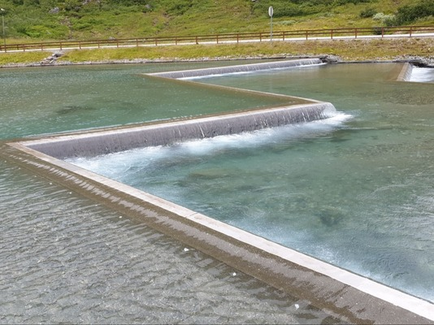
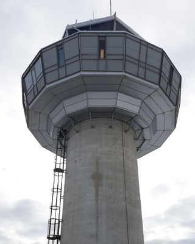
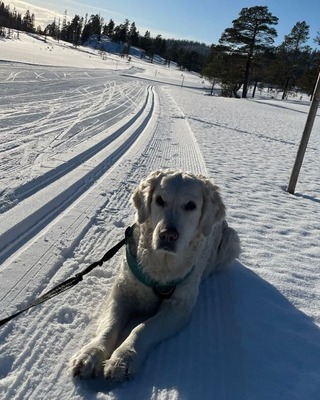

Work
In the future I'd like to become an ethical hacker or penetration tester. Maybe I’d like to work in a big tech company like Google or Microsoft. I don't know where yet, but I would like to work internationally, at least for some time. I might be looking to take a masters' degree back home, optionally while I'm working.

Living
Since I might want to work internationally, I would probably like to live somewhere other than my home. Remote work with some travelling is an option, and maybe staying here if it’s possible. It depends mostly on what would keep me here vs home. It would be awesome to live comfortably and be able to choose what to do. A penthouse apartment seems kind of nice.


Backup
I'd love to have some pets, either cats or dogs, or both. It would be nice to do surfing, skiing/snowboarding, tennis and travelling when I have time. As a backup career, I would like to be an air traffic controller or as a more alternative practical path, maybe a chef. It would also be awesome to learn skills such as woodworking, glassblowing and painting, and maybe some ballroom dancing.

